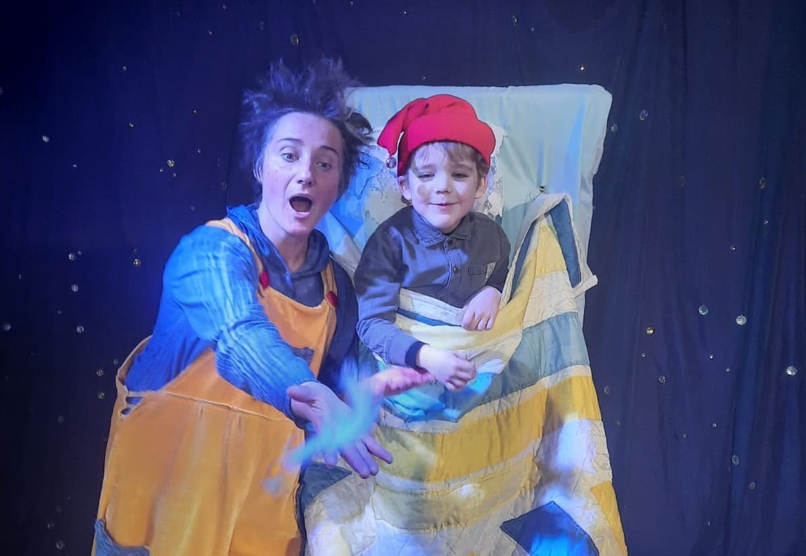
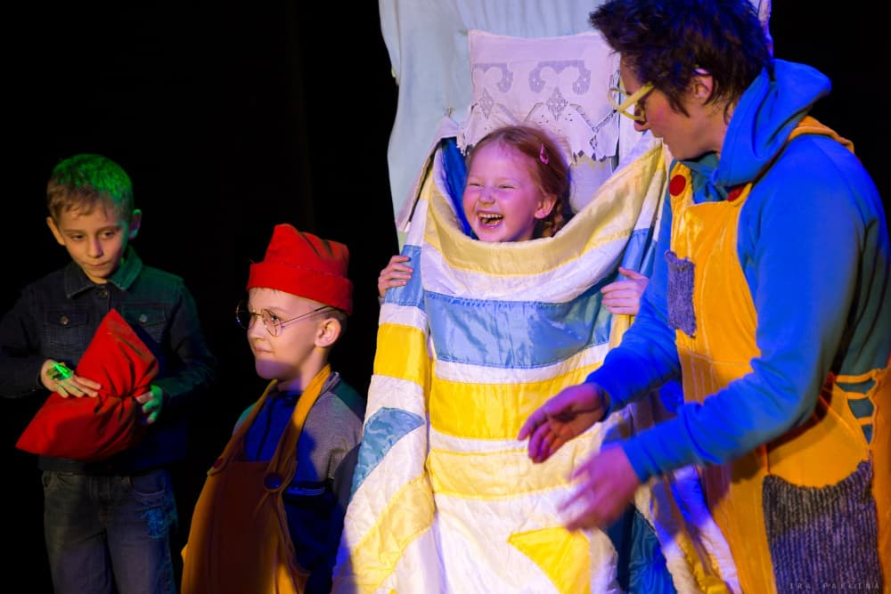
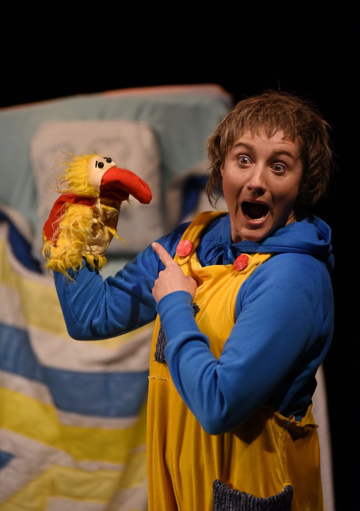
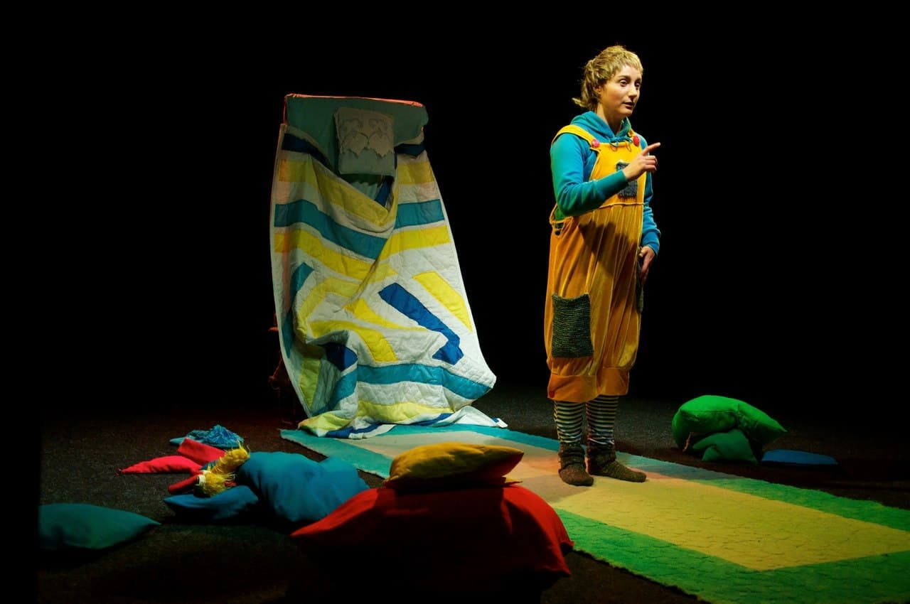
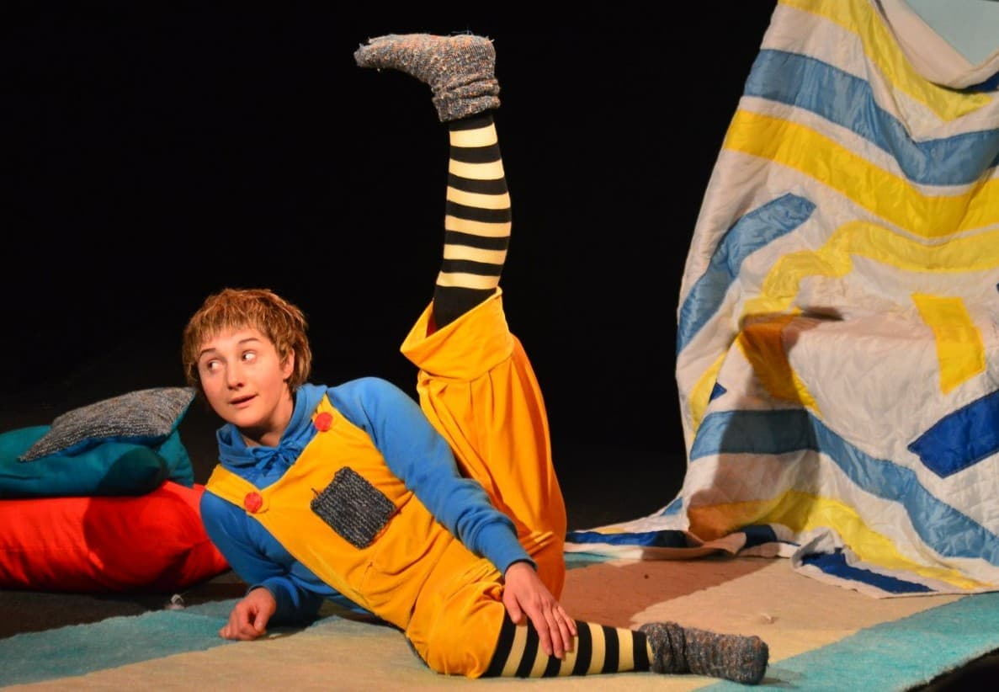

Спектакль "Человечек из часов" - фантазия на стихи Саши Черного.
Мальчик Антошка никак не может уснуть, и чтобы не было страшно, он зовёт поиграть выдуманного друга — озорного человечка из часов.
Вместе они превращают детскую спальню в мир, где есть месяц и звёзды, весна и кошки,
необыкновенные превращения подушек с участием зрителей, а самое главное — много уморительно смешного.
Вместе со зрителями Антошка заводит новых друзей, знакомится с героями стихов Саши Черного и поет песни.
Присоединитесь и вы к ночному приключению Антошки!
Рекомендовано к
просмотру 5+
Спектакль без антракта
продолжительность:
1 час
Галерея
Image title

Image title

Image title

Image title

Image title
Image title
Image title
Image title

Image title
Создатели
Актриса
Маргарита Смирнова
Окончила РГИСИ в 2000 году по специальности "артист драматического театра и кино",
курс М. А. Левшина.
Мастер актерского мастерства и педагог.
Режиссер
Владимир Михельсон
Окончил ЛГИТМиК в 1984 году по специальности "актер театра и кино"
(мастер курса - В.В.Петров) и в 1992 году по специальности "режиссер"
(мастер курса - В.С.Голиков).
Был режиссером Иркутского академического драматического театре имени
Н. Охлопкова. С 2015 года - главный режиссер Московского государственного театра киноактёра.
Доцент факультета театра и кино Международного гуманитарно-лингвистического института.
Создание образов в жанре театра кукол
Андрей Князьков
Заслуженный артист России, заслуженный деятель искусств Республики Бурятии.
Актер, режиссёр, педагог.
Пантомима, пластические этюды
Елена Викторовна Маркина
Советский и российский театровед, педагог, автор книг и учебных пособий, профессор кафедры зарубежного искусства СПбГАТИ.
Автор единственной в мире монографии о французском миме Марселе Марсо.
Отзывы
Спектакль - погружение
Татаьяна Грибовская
«Спасибо театру и Маргарите Смирновой за спектакль
«Человечек из часов». Такая непростая литературная основа,
много незнакомых устаревших слов, но...
как ярко и сочно рисует образы герой спектакля.
Мальчик Антошка становится твоим знакомым мальчишкой -
таким же фантазером, как и ты в 6 лет. Моноспектакль - это супер сложно,
а моя 4х-летняя дочь вся в спектакле на протяжении часа. Браво Маргарите!
Спектакль - погружение. Спасибо за этот воскресный подарок.
»
Столько фантазии
Екатерина Кречетова
«Побывали сегодня на спектакле «Человечек из часов».
Потрясающе, как один актёр держит внимание маленьких зрителей на протяжении почти часа.
Реквизита минимум, зато столько идей, столько фантазии! Очень понравился интерактив - так ловко вовлекли детей в соучастие!
Большое спасибо!»
И детям и взрослым
Римма Левина
«
Были сегодня на спектакле «Человечек из часов»,
очень понравилось и все дети с таким восторгом слушали стихи классика (Саши Черного)
в замечательном исполнении Маргариты Смирновой. Очень необычно, прекрасно и завораживающе. Это надо смотреть и детям и взрослым.
»
От души рекомендую
Анна Галактионова
«
Сегодня я впервые побывала на МОНОспектакле. В уютном и близком к дому, театре Три Четыре неподражаемая Маргарита Смирнова погрузила нас в атмосферу сказки и мечтаний. Дети смотрели на сцену, открыв рот, а мамы заливались смехом. Очень здорово было, что дети смогли принять активное участие в спектакле и у каждого была своя маленькая роль. Мои два зайца до сих пор под впечатлением от увиденного.
»